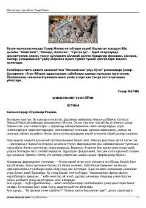

JUO'smirlarning jinoyat yo'liga kirib qolish sabablari va tarbiya masalalari haqida risola.
Ushbu risola o'smir va yoshlarning to'g'ri yo'ldan adashishlari sabablari, jinoyat olamining achchiq oqibatlari haqida fikr yuritadi. Muallif yoshlarning tarbiyasida ota-ona, maktab va jamiyatning o'rni hamda mas'uliyatini tahlil qiladi.